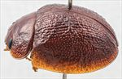
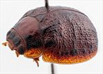
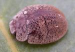
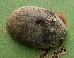
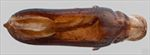
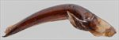
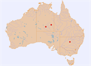

Click on images to enlarge
{kind=link}

Male, Alice Springs, Northern Territory
{kind=link}

Female, Cobar, New South Wales
.jpg){kind=link}

Male, Alice Springs, Northern Territory
{kind=link}

Female, Cobar, New South Wales
{kind=link}

Aedeagus, dorsal view (Alice Springs, Northern Territory)
{kind=link}

Aedeagus, lateral view (Alice Springs, Northern Territory)
{kind=link}

Distribution
Name
Trachymela sp. Ta141
Reference specimen
2007-109b, Jervois, 80km E of, Northern Territory.
Adult Description
Length: ♀ 5.9-7.3 mm [7], ♂ 6.0-7.0 mm [4].
Colour: head mid-brown, either completely so or with two large, black spots on frons, one on each side of centre line and directly behind fronto-clypeal suture, sometimes these almost merged into one large spot, mandibles with black tips, labrum yellow-brown; antennae straw-brown throughout; pronotum: brown, similar to or slighly darker than head, usually completely so, sometimes with darker brown (rarely very dark) band extending from anterior to posterior margin with lateral boundaries roughly level with humeral callus and VR3; scutellum: brown, same shade as pronotum, outlined with a thin darker brown border; elytra: almost uniformly brown, same shade as pronotum, sometimes with a few of the larger verrucae slighly darker-brown, often most noticeable near base of elytra between VR1 and VR5 , punctures similar in shade or slightly darker than interstices, humeral callus light brown; venter: almost completely light- to mid-brown, including legs and abdomen, with only metathoracic ventrites, especially laterally, darker brown; inside surface of elytral epipleura brown. Cuticular wax: brown and quite evenly distributed over elytra, with a small grey patch at anterior margin of elytra, between VR1 and VR3, pronotum with wax of similar shade or fractionally lighter brown.
Shape: evenly and quite strongly rounded from scutellum to close to apex, where curvature increases very slightly, height=42-47%BL, greatest height viewed laterally well in front of middle of elytral margin. Head; punctures moderately and somewhat unevenly sized (pd~1.5-3xef), often extended longitudinally. Antennae short (AL ♂=37-41%BL, ♀=32-38%BL), filiform. Pronotum; almost evenly curved transversely, at most slighly explanate only at lateral extremes, foveal depression very shallow or absent with an almost round elevated pustule in middle that may be smooth or finely punctured, discal area smooth or somewhat rugulose, often with a slightly elevated verruca in line with VR3, punctures clearly impressed (rarely less so) and similar-sized or fractionally larger than those on head, evenly to slightly unevenly distributed, becoming coarser from foveal depression to lateral margins. Front margins join lateral margins in a smoothly rounded right-angle, with lateral margin curving smoothly and very gradually towards rear margin, maximum width about 25% from rear margin. Scutellum; punctured, punctures similar in size or fractionally smaller than those on adjacent area of pronotum but often not as deeply impressed. Elytra; surface evenly curved transversely, punctures moderate to small and distinct and relatively evenly distributed on anterior 2/3 of disc between the prominently convex interstices, surface more granular and punctures less clearly defined in apical third, the convex interstices often form transverse ridges with the most prominent of these a discontinuous or almost continuous ridge that is situated just posterior to antero-median depression and extends over most of disc, verrucae are present but are generally small and inconspucuous, usually slightly more numerous along VR3 and VR5, where they may form partially connected longitudinal ridges, elytral suture carinate in posterior third, surface continuous under humeral callus; lateral margin either straight or angled upward in anterior section, sometimes with anterior angle extended downwards very slightly. Vertical extension of epipleura considerable (HCE/PW=0.37-0.41). Venter; Prosternal process narrowest anteriorly, rarely lightly closed, short setae sparsely distributed over prosternal process, absent from mesosternum, a single seta on anterior and median trochanter; front edge of metasternum beveled, rounded; inner edge of posterior of epipleura lacking setae. Aedeagus; moderate-sized (LPE=25-29%BL), in dorsal view, widest near basal sulcus, then narrowing gradually to about rear of ostium where sides become parallel until close to apex, from where sides converge towards apex in a smooth arc, ostial depression roughly elliptical in shape with dorsal processes protruding to very close to apex; tip small and smoothly triangular; in lateral view, curved smoothly through near 45⁰ around basal sulcus then ventral surface very lighly curved almost to apex, where the curvature increases almost imperceptably, dorsal surface parallel to ventral until about 40% of distance from apex, then converging evenly towards ventral surface, tip deflexed.Larvae
unknown.
Eggs
unknown.
Similar species
Ta112 – this species appears quite similar at first glance, particularly in the distribution and colour of the cuticular wax and the presence of an interupted transverse ridge across the centre of the elytral disc. It has more patches of black colour on the head, pronotum and elytra than Ta141. The aedeagus of the two species are quite similar in shape and structure, but that of Ta112 is broadest around the ostium and more than 30% longer than that of similar-sized specimens of Ta141.
Ta132 – another species of similar size that is distributed in the drier inland areas of Australia. Its cuticular wax distribution can be quite similar to that of Ta141, and it is often also devoid of black markings. It lacks the interrupted transverse ridge across the middle of the elytral disc and its aedeagus is shaped quite differently, being much broader and the ostial depression is not closed posteriorly.
Ta126 – this species tends to be much darker, with rows of dark-brown or black verrucae almost invariably present. The lateral margins of the prothoracic disc of Ta126 are usually marked by a clearly elevated and often black ridge. The aedeagus of the two species are very similar in shape and structure, but that of Ta126 is broader apically (around the ostium) and it is about 15% longer for specimens of similar size.
Notes
The specimens included in this grouping were collected from three rather widely separated locations. They exhibit significant structural similarity, with all specimens having an interrupted transverse ridge on the elytra. Those found in N.S.W. (near Cobar) display more dark colouration on the pronotum and elytra, though this is a character that tends to be quite variable in many species. The distribution of cuticular wax appears consistent across specimens from all localities, featuring a slightly paler patch at the elytral base between VR1 and VR3. Morphometric data is comparable between specimens from all the sites - however, the Cobar sample does not include any males for comparison.
Ta141 has been collected from Eucalyptus pachyphylla (Symphyomyrtus: Bisectae) and E. camaldulensis (Symphyomyrtus: Exsertaria) in Central Australia. The host of the Cobar specimens was not identified.Copyright © 2026. All rights reserved.